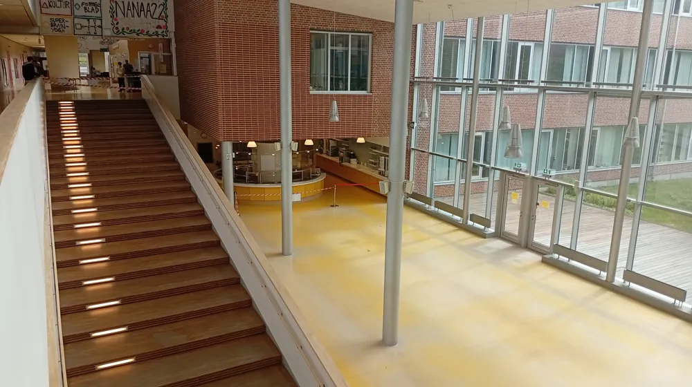

Östra politik

Onsdagslunchen ställs in - omöjligt att fixa schemat
Nya scheman detta år - ändå samma problem: Matsalen på onsdagar är trängre än T-centralen i rusningstrafik.
De senaste fem åren på Östra har onsdagslunchen varit oerhört trång. "Ibland måste jag sitta under trappan för att det inte finns någonstans att sitta", berättar en förtvivlad elev. Att det är trångt är inte så konstigt, menar experter. "Uppemot 63,4% av klasserna har lunchrast vid samma tid, det leder till problem", säger Agenda Svensson, doktorand i schemaläggande. Trycket var som högst vid 11:43 förra veckan, då det befann sig över 500 elever i matsalen samtidigt.
Under åren har många försök gjorts, men det är omöjligt att rubba schemat. "Att flytta några lektioner med 6, 7 minuter är det bästa man kan göra, men det ger fortfarande inga märkbara resultat", säger Svensson. Efter att skolan inte lyckats hantera problemet har nu kommunen klivit in och stängt av lunchen på onsdagar mot skolans vilja. I ett pressmeddelande säger kommunen "om inte alla får mat får ingen mat".